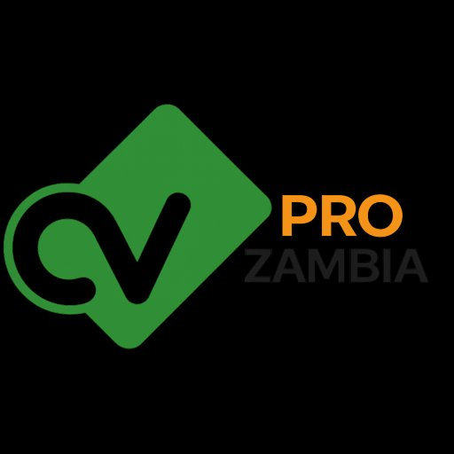

Zambia's dedicated career and CV platform. Build a professional CV, apply for jobs, and connect with employers — free for job seekers.
Most CV builders are designed for Western job markets. CVPro Zambia is built around what Zambian employers actually want to see — and what government and NGO HR departments require in applications.
Templates designed for Zambian employers — format, structure, and content that works locally.
Apply to jobs directly from CVPro and track all your applications in one place.
Employers using GlamifiedHR can convert a hired applicant into an employee record with one click — no re-entering data.
Most large companies and NGOs use Applicant Tracking Systems that automatically filter out CVs before a recruiter reads them. CVPro CVs are structured and scored to pass ATS checks with high marks.
See your CV's ATS compatibility score as you build — and get tips to improve it.
CVPro highlights missing keywords based on the job you're applying for.
Clean, machine-readable layouts that ATS systems parse correctly every time.
CVPro Zambia and GlamifiedHR work together to power the entire hiring lifecycle.
Job seeker creates a professional CV on CVPro Zambia for free.
Browse listings and apply directly through CVPro or Glamified Jobs.
Employer reviews applications in GlamifiedHR and selects a candidate.
One click converts the applicant into a GlamifiedHR employee record.
Choose from Zambian-specific templates. Fill in your details. Download a print-ready PDF.
Get matched with jobs that fit your skills, experience, and location preferences.
See all your applications, know which are being reviewed, and get notified of decisions.
CVPro Zambia is always free for job seekers.
Start building your CV →Post jobs, find qualified candidates, and onboard them directly into your HR system.